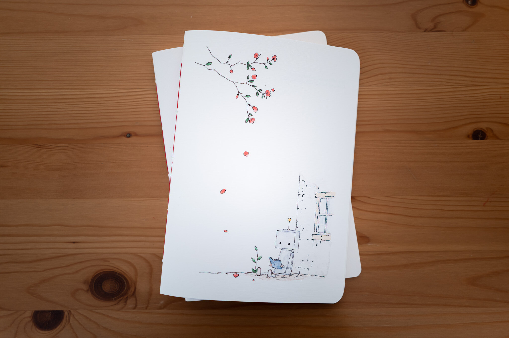

Story object
Robey in Seoul
A small Seoul scene, waiting for your hand. Robey notices first; you write what remains. Each edition pairs an illustrated cover, a thread color, and a bilingual story card.
- Best forGifts, travel memories, journaling, Seoul storytelling
- SharedA5 or A6, blank, lined, or grid pages
- ExtraMatched thread and bilingual story card